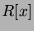
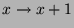
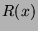
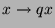
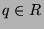
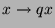
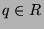
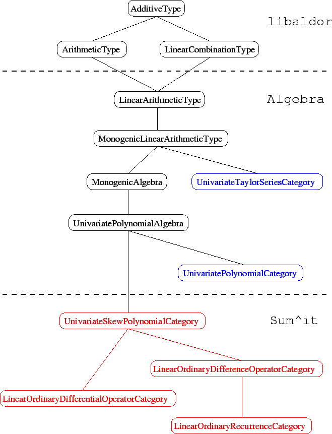

Next: Solutions of differential and
Up: User Guide
Previous: User Guide
Contents
Index
 provides several types for computing with univariate
skew-polynomials or specific linear operators.
The most general is UnivariateSkewPolynomial,
for which you provide the Automorphism
provides several types for computing with univariate
skew-polynomials or specific linear operators.
The most general is UnivariateSkewPolynomial,
for which you provide the Automorphism  and the -derivation
and the -derivation  as parameters.
In addition, you also provide a usual polynomial type
that is meant to be used as internal representation for
the skew-polynomials. This lets you choose between dense
or sparse representation by selecting the appropriate
representation type. As for polynomials, naming the
variable is not necessary since the name is used only for output.
If you want to name the variable, pass a polynomial type with
a variable name as reprensentation type. There are several
ways to create the Automorphism :
since Automorphism is of category Monoid,
the constant 1 can be used for the identity
map, while morphism is used for more general maps.
as parameters.
In addition, you also provide a usual polynomial type
that is meant to be used as internal representation for
the skew-polynomials. This lets you choose between dense
or sparse representation by selecting the appropriate
representation type. As for polynomials, naming the
variable is not necessary since the name is used only for output.
If you want to name the variable, pass a polynomial type with
a variable name as reprensentation type. There are several
ways to create the Automorphism :
since Automorphism is of category Monoid,
the constant 1 can be used for the identity
map, while morphism is used for more general maps.
There are also types for common linear operators:
- LinearOrdinaryDifferentialOperator provides
linear ordinary differential operators with respect
to an arbitrary Derivation that is given as
parameter. The derivation can be omitted if the coefficient
type is a DifferentialRing.
- LinearOrdinaryDifferenceOperator provides
linear ordinary generalized difference operators with respect
to an arbitrary Automorphism that is given as
parameter.
- LinearOrdinaryRecurrence provides
linear ordinary difference operators with coefficients
in a polynomial ring  and with respect
to the shift .
LinearOrdinaryRecurrenceQ provides
the same operators but over the rational fraction field .
- LinearOrdinaryQDifferenceOperator provides
linear ordinary
 -difference operators with coefficients
in a polynomial ring and with respect
to the shift  for a given , which
is given as parameter to the type.
LinearOrdinaryQDifferenceOperatorQ provides
the same operators but over the rational fractions .
-difference operators with coefficients
in a polynomial ring and with respect
to the shift  for a given , which
is given as parameter to the type.
LinearOrdinaryQDifferenceOperatorQ provides
the same operators but over the rational fractions .
All of the above are implemented using a dense representation,
and allow an optional Symbol as last parameter if you
want to name the variable for output.
Finally, to manipulate and solve first order linear systems rather
than scalar operators, use the LinearOrdinaryFirstOrderSystem
type for both differential and generalized difference systems.
Because polynomials and skew-polynomials share
many common operations,
provides a
category hierarchy for operators that fits within the
polynomial hierarchy of libaldor and Algebra , as
shown in Figure 1.
Figure 1:
The
 univariate skew-polynomial category hierarchy
univariate skew-polynomial category hierarchy
|

|
Those categories make it possible to write functions
that work for skew-polynomials at various levels of generality,
and also to apply all the Algebra functionalities designed
for the category
UnivariatePolynomialAlgebra to skew-polynomials.
When writing generic code for manipulating
skew-polynomials or operators, use a type parameter with the
appropriate category selected from Figure 1.
Next: Solutions of differential and
Up: User Guide
Previous: User Guide
Contents
Index
Manuel Bronstein
2002-08-04